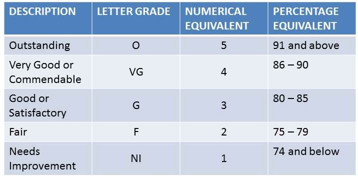

This grade is numerical with 75% as the lowest passing grade. All requirements, tests and acticities which are graded numerically are computed using the base mark 50%.
Xavier University Grade School follows a cumulative grading system. One-third of the previous quarter's grade is added to the grade of the current quarter.
This grade evaluates how dedicated a pupil applies himself or herself to the different activities or tasks required to attain mastery of the lessons learned in school.
The Conduct Grade is given to indicate the growth in self-discipline and to show how a pupil is contributing to proper order in the entire school community.
Every quarter, class moderators also give grades to the members of the Homeroom class following descriptive grades: O, VG, G, F or NI.
Every quarter, the Prefect of Students also give grades to the members of the Homeroom class following descriptive grades: O, VG, G, F or NI based on the records of:
Every quarter, the Club Moderators give grades to all their club members corresponding to the contribution of the member to achieve the Club's objectives. These are also in also letter grades of O, VG, G, F or NI.